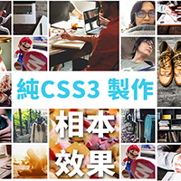
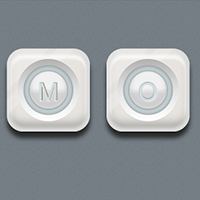

超簡單格相簿效果教學
使用 :nth-child() 選取器可以讓我們快速選取規律的特定數物件，超方便！而網頁設計師每每在設計網頁時，相片的陳列一向都是個困擾，畢竟方方正正的東西，還要排得好看不會跑版，最簡單的就是把它做得跟表格一樣排得整整齊齊的啊，每個大小都一樣，多好處理啊！想要有隨機大小變化的感覺雖然好看卻不知道怎麼才能排出來，所以視覺設計師只好接受這樣死板又不美的畫面，大部份設計師採用添加一些外框或是背景去襯托相片，可是每個相本的大小都還是一樣啊～一點變化都沒有，所幸我們現在有了 CSS3 的 :nth-child 選取器，要多一點變化就變得輕而易舉了。
用 CSS3 畫理髮廳廣告燈

Amos 好久沒有用 CSS3 畫些好玩的 CSS3 小範例了，距離上次用 CSS3 繪製精美的膠囊 也已經快滿一年了(哇！也偷懶太久了吧)，趁著一個假日，跟好友 Fran 大師借了張他許久前畫的圖來試著畫看看，當初 Fran 大師曾經問過我是否有辦法製作圓型的漸層，當時看到這圖片時還想不到怎麼做出那顆金屬球體，現在想到了做法就來刻看看囉。首先我們來看看整體的 html div 標籤使用了幾個，在這個例子中為了一些小細節的處理，原本只規劃了使用2~3個 div 去處理，但最後為了眾多的細節而不得不把 div 添加到了四個之多，以下是這次使用到的 html 標籤結構，分成理髮廳廣告燈的主體以及上下金屬球＋跑馬燈圓柱體。
純CSS三角組合字體動畫
自從 CSS3 有了動畫之後，世界都變得複雜美好了起來，我們可以利用 CSS3 而不需 javascript 來達到簡易的動畫效果外，也能用 CSS3 來搭配 javascript 來輕鬆處理一些較為複雜的網頁動畫效果，在 CSS 可樂部落格的概念中，手刻純 CSS 是 Amos 一向的習慣與觀念，所以這次 Amos 把之前放在腦袋裡的概念抽空寫了出來，驗證腦袋瓜內的東西有沒有問題這樣。
用 CSS3 繪製立體感圖示
自從 CSS3 新增了漸層與陰影屬性之後，網頁設計的彈性就變得更大了，於是使用 CSS3 畫圖的人就變多了，所以Amos也不例外，看到網路上有人用Photoshop畫出好看的icon，那CSS可樂就用 CSS3 來畫吧！ok～ 想做就去做吧！首先必須要先分析一下這樣的圖示大概可以用哪幾個 CSS3 的屬性做出來？然後思考一下需要幾個div標籤？當然，div多個幾層做起來是簡單的～但是Code就變得髒多了～但這樣就失去了使用 CSS 的原始目的，最後！Amos決定用兩層div來做。